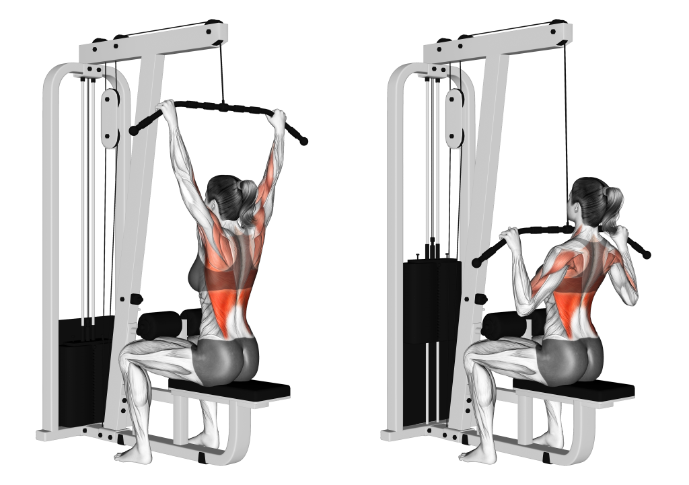

Lat Pull Down
Go to bottom
The Lat Pull Down is a popular exercise for strengthening the back and shoulders, making it a key component of strength training and muscle building in the upper body. While its primary target is the latissimus dorsi muscle, the lat pulldown offers various benefits beyond just activating this muscle. It can enhance biceps muscle activity, improve mid and upper back strength and stability, and increase grip strength. However, it is essential to understand the mechanics and benefits of the lat pulldown to perform it correctly and maximize its effectiveness, as there is often misinformation surrounding its execution. By learning the proper technique and understanding its advantages, individuals can optimize their gains from this exercise.

Benefits of the Lat Pull Down
- Latissimus Dorsi Development: The lat pulldown primarily targets the latissimus dorsi muscles, also known as the "lats." It helps develop strength and size in this large muscle group, contributing to a wider and more defined back.
- Upper Body Muscle Activation: In addition to the lats, the lat pulldown also engages other muscles, including the biceps, rhomboids, rear deltoids, and trapezius. This comprehensive activation promotes overall upper body strength and muscular development.
- Improved Posture and Back Stability: The lat pulldown exercise strengthens the muscles responsible for supporting the spine and maintaining good posture. This can help alleviate back pain and improve overall back stability.
- Increased Grip Strength: Performing lat pulldowns can enhance grip strength, as the exercise requires a firm hold on the bar or handles. This can benefit various activities that involve gripping, such as weightlifting, sports, and everyday tasks.
Muscles Targeted
- Latissimus Dorsi: The latissimus dorsi, commonly referred to as the "lats," is the primary muscle targeted by the lat pulldown exercise. It is located in the upper and mid-back region and plays a crucial role in back width and overall upper body strength.
- Biceps Brachii: While not the main focus, the biceps brachii muscles in the upper arms are also engaged during the lat pulldown as they assist in elbow flexion.
- Rhomboids: The rhomboids, located between the shoulder blades, help retract and stabilize the scapulae during the lat pulldown movement.
- Trapezius: The trapezius muscles, particularly the middle and lower fibers, are activated to support scapular retraction and shoulder stability during the exercise.
Back to Home